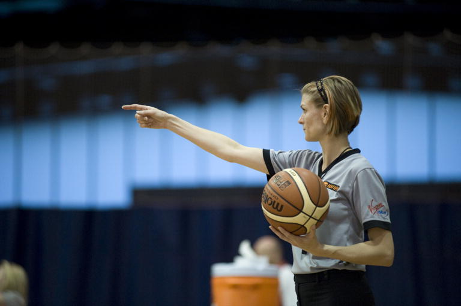

In practical terms ‘sport’ is defined by its social interpretation as well as its strong association with physical exertion and performance measures. What we perceive as ‘sport’ in one instance may not be in another; sport takes on many forms and is constantly changing based upon societal norms, trends, and new directions.
Defining sport
Definitions of sport may also be accompanied by definitions for one or more similar, closely related, activities that are ‘not sport’.
Sport
A human activity involving physical exertion and skill as the primary focus of the activity, with elements of competition or social participation where rules and patterns of behaviour governing the activity exist formally through organisations and is generally recognised as a sport.
Organised sport
The degree of organisational structure that surrounds and influences the sport helps to distinguish whether an activity is classified as ‘organised sport’.

Sport participation
Sport participation is not easily defined and will often depend on how it is perceived by the observer. As a guide, a ‘sport participant’ is a person who takes part in a sporting activity, whether in a formal or informal capacity. Some examples of sport participation can be described by a particular role performed in sport (including playing and non-playing roles), such as an athlete (or player), coach (or trainer, instructor), or official (or umpire, referee). There are many roles in sport, and these can be volunteer or paid. How a person describes their engagement (such as solo or group, impromptu or scheduled, or the place/setting) can also help to determine if their sport participation is organised or not.
Sport participation settings: where and ‘how’ do Australians play sport, Eime, R., Harvey, J. & Charity, M. BMC Public Health 20, 1344 (2020).
Physical activity
Any bodily movement produced by skeletal muscles that results in energy expenditure. It can be undertaken in many different ways.
Active recreation
Activities engaged in for the purpose of relaxation, health and wellbeing or enjoyment with the primary activity requiring physical exertion, and the primary focus on human activity.